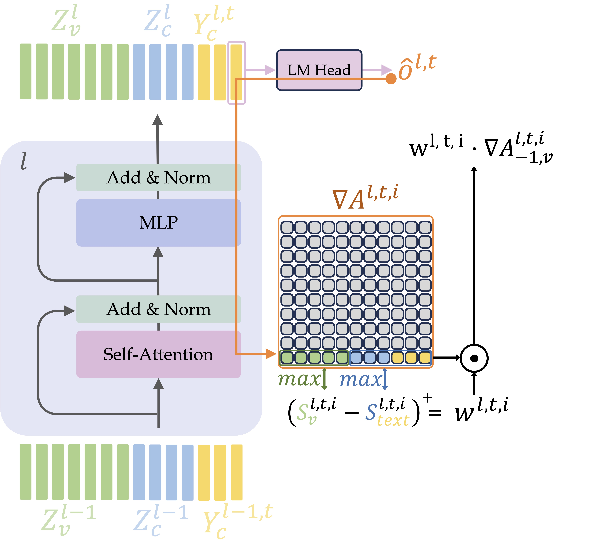

As Vision-Language Models (VLMs) become increasingly sophisticated and widely used, it becomes more and more crucial to understand their decision-making process. Traditional explainability methods, designed for classification tasks, struggle with modern autoregressive VLMs due to their complex token-by-token generation process and intricate interactions between visual and textual modalities.
We present DEX-AR (Dynamic Explainability for AutoRegressive models), a novel explainability method designed to address these challenges by generating both per-token and sequence-level 2D heatmaps highlighting image regions crucial for the model’s textual responses. The proposed method interprets autoregressive VLMs by computing layer-wise gradients with respect to attention maps during the token-by-token generation process.
DEX-AR introduces two key innovations: a dynamic head filtering mechanism that identifies attention heads focused on visual information, and a sequence-level filtering approach that aggregates per-token explanations while distinguishing between visually-grounded and purely linguistic tokens. Our evaluation on ImageNet, VQAv2, and PascalVOC shows a consistent improvement in both perturbation-based metrics, using a novel normalized perplexity measure, as well as segmentation-based metrics.

Autoregressive VLMs generate text sequentially, with each token potentially attending to different parts of the image and previous textual context. Traditional explainability methods fail to capture this dynamic interaction.
DEX-AR tackles this by leveraging layer-wise gradients with respect to attention maps to produce 2D heatmaps highlighting the most influential image regions for each generated token. As shown in the figure above 👆, at each layer l, head i, and generation step t, gradients of attention maps are computed. To suppress noise from attention heads that primarily focus on text rather than image content, we apply a dynamic head filtering mechanism that weights contributions based on their relative focus on visual versus textual tokens. Finally, we apply token-level filtering to distinguish between visually-grounded words (e.g., "dog", "ball") and linguistic filler words (e.g., "the", "is"), yielding accurate, model-agnostic explanations without post-hoc heuristic smoothing.
DEX-AR generates focused attributions that align with the objects being discussed, while comparable methods tend to generate more diffuse or scattered heatmaps. Our dual-filtering approach effectively separates relevant objects from background elements.

We evaluated DEX-AR across multiple model architectures (LLaVA, BakLLaVA, PaliGemma, and Florence-2). Our method consistently localizes objects of interest with high precision across portraits, animals, and complex indoor scenes.

DEX-AR accurately localizes distinct objects (e.g., "hat", "clock") and abstract concepts (e.g., "vintage") despite dense environments. Notably, the method correctly distinguishes between visually grounded tokens (e.g., "suit") and purely linguistic completions (e.g., "case" in "suitcase"), actively suppressing the latter.

@article{bousselham2026dexar,
author = {Bousselham, Walid and Boggust, Angie and Strobelt, Hendrik and Kuehne, Hilde},
title = {DEX-AR: A Dynamic Explainability Method for Autoregressive Vision-Language Models},
journal = {arXiv preprint arXiv:2603.06302},
year = {2026},
}